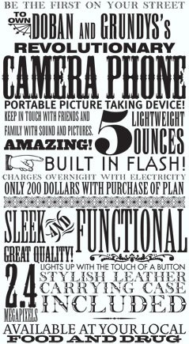
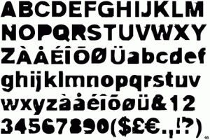

Documentation
S.XIX (Newspaper)
CONCEPT
The 19th century covers the time of the Industrial Revolution, which was a time of industrialization, of incessant changes in various aspects, especially technology.
During this century, cities grew rapidly. Political power moved away from the aristocracy and towards the capitalist manufacturers and merchants. It is a time that is characterized by having made large investments in machinery for the manufacture of mass products. People were no longer interested in the humanistic, nature, or spiritual. The new interest was material goods.
In earlier times, typography was used for books, but from the 19th century, the applications of typography multiplied: now it was used for the creation of posters, newspapers, advertising, etc. Graphic communication gained importance, the availability of printed materials was expanded thanks to technology, which reduced unit costs.
Slab Serif
In this century the typeface called “Slab Serif” appears, also known as Egyptian or Mechanical, which were heavy types, with straight serifs, used to attract attention. This typography was the one that gave the basis for the creation of the Fat Face or Bold.
In typography, a slab serif typeface is a serif typeface that is characterized by thick, blocky serifs. Serif terminals can be blunt and angular (Rockwell) or rounded (Courier). Slab serifs were invented and most popular during the 19th century.
Slab serifs form a wide and varied genre. Some like Memphis and Rockwell have a geometric design with minimal variation in stroke width: they are sometimes described as sans-serif fonts with added serifs. Others, like those in the Clarendon genre, have a structure more like most serif fonts, albeit with larger and more obvious serifs. These designs may have bracketed serifs that increase in width along their length before merging with the main strokes of the letters, whereas in geometry the serifs have a constant width.
FONTS
Ultra: Featured titles
Ultra is an ultra bold slab typeface with nods to wood type styles like Clarendon and Egyptian. Strong and dramatic letterforms for titling, a serious, yet friendly, and easily legible typestyle. Perfect for power headlines and titling for impact.
Alfa Slab One: Secondary titles
Alfa Slab One is a contemporary take on the Six-lines Pica Egyptian created by Robert Thorne. Although initially based on that model, Alfa Slab One was designed with an extreme stem weight, big serifs, more stem contrast and gradual terminals with a single serif. All this attributes give Alfa Slab One a contemporary look with extreme black density.
Kanit: Body
Kanit means mathematics in Thai, and the Kanit typeface family is a formal Loopless Thai and Sans Latin design. It is a combination of concepts, mixing a Humanist Sans Serif motif with the curves of Capsulated Geometric styles that makes it suitable for various uses, contemporary and futuristic. A notable detail is that the stroke terminals have flat angles, which allows the design to enjoy decreased spacing between letters while preserving readability and legibility at smaller point sizes.
In Thai typeface design the formal loopless Thai typefaces have more simple forms than the conservative looped Thai designs, and this simplification has to be done properly in order to preserve the essential character of each letter. Sizes and positions of vowels and tone marks need to be managed carefully because they are all relevant to readability, legibility, and overall textures.

REFERENCES
- https://www.istockphoto.com/es/vector/fuente-del-serif-de-la-losa-en-el-estilo-occidental-gm921668170-253088637
- https://espowiki.com/slab_serif
- https://hmong.es/wiki/Slab_serif
- https://prezi.com/u-x5j3ac4auc/tipografia-del-siglo-xix/
- https://monsterspost.com/es/30-tipos-de-letra-slab-serif-para-titulos-impresionantes-descargar-gratis/
- https://fonts.google.com/
S.XX (Comic)
CONCEPT
In typography, the last decade of the 20th century was a period of great expectations, important technological advances, many experiments and controversial results. The early 1990s passed under the influence of post-structuralist theories and one of the results of this was the childish idea that text is image and vice versa. It took designers almost a decade to realize that text is text and differs from a drawing in its ability to communicate.
This contributed to the further understanding that reading is not a passive process but a complex group of activities. The reading process is not linear. On the contrary, it is dynamic and active. The use of typography is one of the ways to make the act of reading easier and thus the manipulation of type and space has a fundamental influence on the reader. Typography helps us guide the reader, interpret the content (or contradict it), create a certain atmosphere or declare the author's intentions.
Comic Sans
It could well be said that Comic Sans is like a collection of mockery and organized movements that prohibit its use, as well as a collection that has thousands of followers in favor of its defense. Vincent Connare, the inventor of this typeface, never thought of fame when he created this design, he was just an employee of Microsoft. But fame did wink at Connare.
Vincent Connare worked as a type engineer at Microsoft. He was in charge of an unreleased test of Microsoft Bob, a software package created for young users that included a word processor and a dog named Rover that displayed messages in a bubble. However, the font used in those messages was Times New Roman, a proposal that Connare was not convinced.
As a painter, photographer, graphic communicator and fan of the graphic novel, in 1994 Connare was inspired by those speech bubbles to create Comic Sans. The font of it, rounded and simple, was not ready for the release of Microsoft Bob. Comic Sans was later accepted by 3D Movie Maker, a comic film program. In August 1995, it was one of the sources for the Windows 95 Plus Pack and the OEM versions of Windows 95.
All this controversy of Comic Sans marked a before and after in the history of typographic design: about 20 years ago the typeface was not a priority; it was accepted, but it was not chosen. Today, a typeface is selected according to the message and the emotions that are to be conveyed. It is a global phenomenon, “because sometimes it is better than Times New Roman”, in the words of the creator himself.
FONTS
Dynapuff: Featured titles
Dynapuff's adorable demeanor and hand-drawn charm make him well-suited for your comics. Dynapuff features OpenType code that toggles the vertical position of letters to make those expressions look hand-drawn and less like a robot texting on a typewriter.
What Dynapuff may lack in subtlety, it makes up for in playful, flexible typographic energy. Designed by Toshi Omagari, this casual typeface is optimized for legibility in small text environments, like stickers or candy packaging. It also makes it big when displayed in children's books for store signs.
Permanent Marker: Secondary titles
Permanent Marker is the perfect font for all your fun designs. The font sub-family is Regular. The font was designed by Font Diner Inc.
Comic Neue: Body
Comic Neue is an original reinterpretation of the classic, Comic Sans.Comic Neue aspires to be the casual script choice for everyone, including the typographically savvy. The squashed, wonky, and weird glyphs of Comic Sans have been beaten into shape, while maintaining the honesty that made Comic Sans so popular.